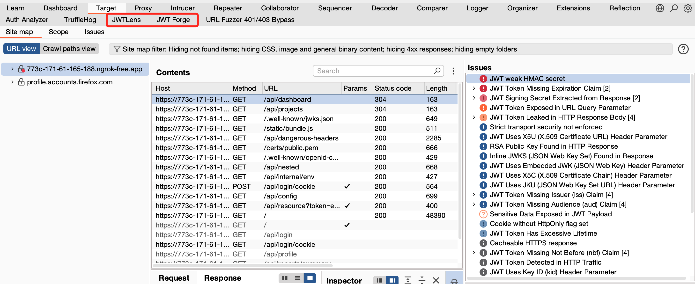
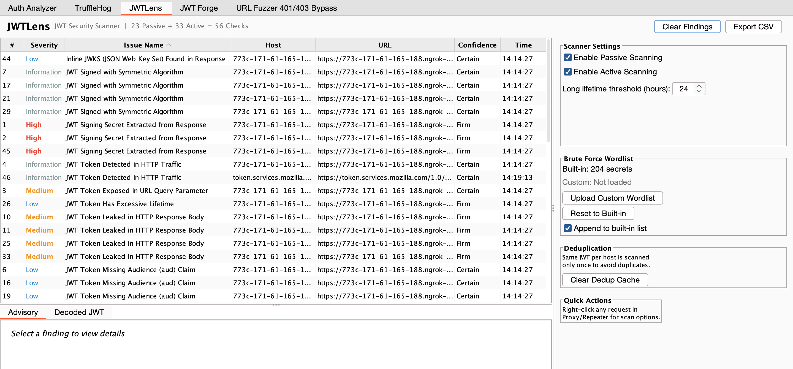
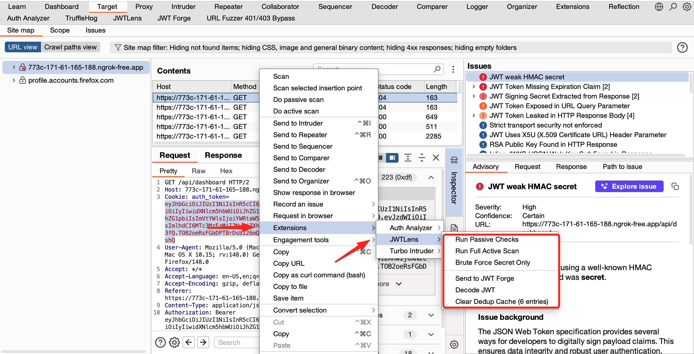
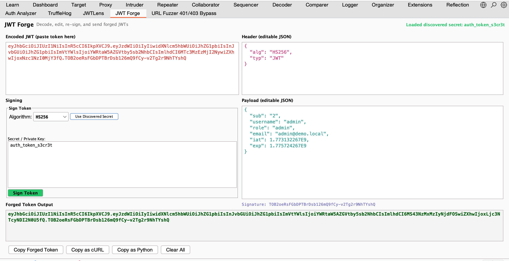

JWTLens
Comprehensive JWT Security Scanner for Burp Suite. Automatically detects and tests JSON Web Tokens for security vulnerabilities with 62 checks — no manual effort required.
Comprehensive JWT Security Scanner for Burp Suite. Automatically detects and tests JSON Web Tokens for security vulnerabilities with 62 checks — no manual effort required.
A live jwt.io-style editor built into Burp. Edit headers & claims, re-sign with any algorithm, export as cURL or Python. Cracked secrets auto-fill instantly.
Automatically finds hardcoded JWT secrets, RSA/EC private keys, inline JWKS, and Base64-encoded secrets from JS, JSON, and HTML responses.
Algorithm confusion attacks use the server's actual public key from JWKS endpoints — not generated keys. This means attacks actually work on real targets.
23 checks run automatically on every request/response through Burp Proxy. No other JWT extension does this. Zero manual effort required.
SQL injection (UNION SELECT, error-based), command injection (time-based), LDAP injection, and path traversal with 10+ traversal paths.
Tracks unique JWTs per host. Browse 50 pages with the same token and get one set of findings, not 50. Clear cache anytime from the UI.




Prerequisites: Java 17+ and Burp Suite Professional or Community (2024.1+)
git clone https://github.com/chawdamrunal/JWTLens.git
cd JWTLens/jwtlens-burp
./gradlew clean jar
Load build/libs/jwtlens-1.0.0.jar in Burp Suite → Extensions → Add. Two new tabs appear: JWTLens and JWT Forge.